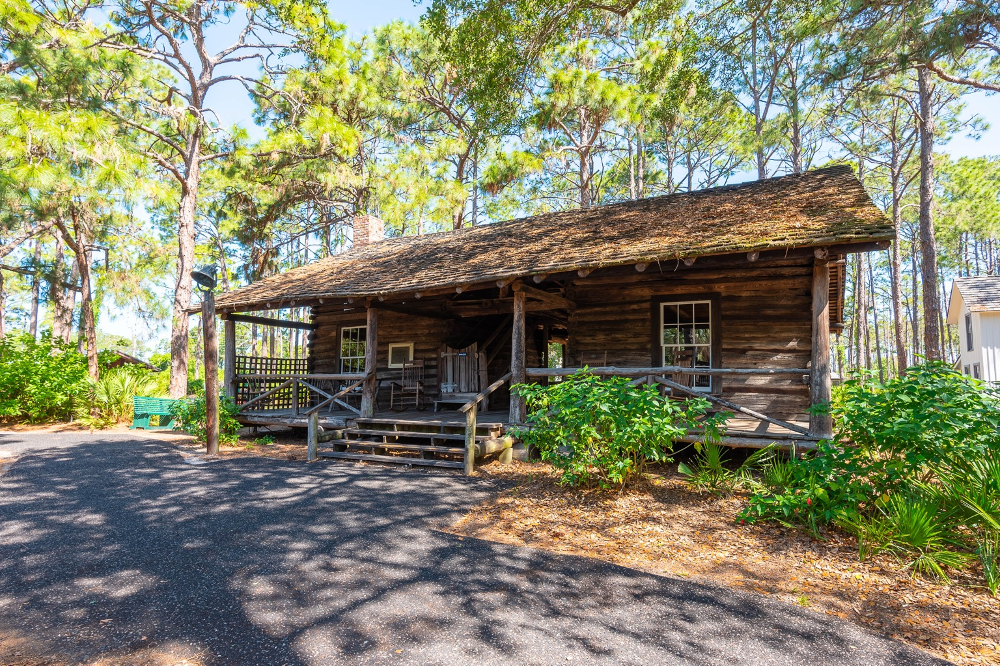

The McMullen-Coachman Log Cabin
The House That Helped Build Pinellas

More Than an Old Log House
At Heritage Village in Largo stands a weathered log house whose rough-hewn walls reach back to the years when the Pinellas Peninsula was still a thinly settled frontier. Today roads, neighborhoods, schools, businesses, and cities cover the peninsula. In the middle of that modern landscape, the McMullen-Coachman Log Cabin survives as a physical witness to the people who lived here before those things existed.
It is usually introduced as the oldest surviving structure in Pinellas County and as an example of the dogtrot, or double-pen, log-house tradition. Both descriptions are important. Neither is large enough to contain its story.
For the McMullen family, the cabin was a home and the center of a working frontier homestead. Cattle, crops, sugar cane, citrus, children, travelers, music, illness, childbirth, war, and community life all touched the place. Elizabeth Campbell McMullen became known for assisting women in childbirth. The homestead was connected to the beginnings of formal schooling on the peninsula and to primitive routes that eventually became part of Pinellas County's road network.
For the Coachman family, who acquired the property at the beginning of the twentieth century, the old house became both useful property and something worth saving. Their stewardship helped carry it through modernization, public interest, neglect, fire, and finally preservation. In 1977 the Coachman family donated the damaged structure to Heritage Village, where it was restored and opened to the public.
A House Designed for Florida
The McMullen-Coachman house belongs to a Southern log-building tradition commonly called the dogtrot. In its simplest form, two enclosed log pens stand several feet apart beneath one continuous roof. The open passage between them—the dogtrot or breezeway—is not leftover space. In a hot climate it is the organizing feature of the house.
Heritage Village describes the McMullen-Coachman Cabin as a Georgia-style log cabin made from local timber, including pine and cypress. Its first floor consists of two rooms divided by the central dogtrot, and the building also had an upper level with its own passage.
The exact construction date deserves a historian's caution. Heritage Village generally dates the house to 1852. Detailed historical research, however, notes that family accounts and printed sources have placed construction between 1848 and 1852. Florida Learning Hub therefore uses circa 1852.
James and Elizabeth McMullen
Captain James Parramore McMullen and Elizabeth Campbell McMullen were the cabin's first occupants. James was one of the seven McMullen brothers whose movement into the Tampa Bay region became part of the pioneer history of the Pinellas Peninsula. He and Elizabeth married in 1844. By the late 1840s and early 1850s, their lives were increasingly tied to the land near Alligator Creek in what is now the Clearwater area.
The McMullen homestead encompassed roughly 240 acres. Heritage Village interpretation describes a diversified operation that included cattle, sugar cane, citrus, and other crops.
James's documented public life extended beyond farming. Records place him in Florida military service during the Third Seminole War era, and an 1861 Florida roster identifies a company commanded by Captain James P. McMullen and stationed at Clearwater Harbor. Later historical and Heritage Village research also connects James and his brother Daniel with the wartime cattle-supply system remembered as the Confederate “Cow Cavalry.” Because surviving military records and later accounts do not always use McMullen initials consistently, Florida Learning Hub treats detailed Cow Cavalry assignments with appropriate source caution.
Elizabeth McMullen and a Frontier “Hospital”
The story of the cabin cannot be told as James McMullen's story alone. Heritage Village materials identify Elizabeth as an early—probably the first—midwife in the area. In a sparsely settled community without a nearby hospital, physician, paved road, ambulance, or modern communications, an experienced woman who could assist during childbirth was indispensable.
Historical interpretation associated with the site reports that nearly sixty members of the extended McMullen family alone were born in the cabin before 1900. Heritage Village educational material consequently describes the home as the area's earliest “hospital.” The word describes a community function, not a nineteenth-century medical institution.
A House Where the Community Gathered
Historical accounts describe the McMullen home as one of the most substantial houses in upper Tampa Bay for roughly two decades. Its importance made it a natural stopping place for people traveling overland. Heritage Village interpretation remembers the cabin as a favorite stop where visitors could spend an evening with the family and where music—guitar, fiddle, and organ—accompanied dancing.
The First School: What the Evidence Actually Says
James McMullen is credited with helping establish the first formal school on the Pinellas Peninsula. A historical sketch preserved by the State Archives of Florida states that the first school on the peninsula was held in a log cabin built by Captain James P. McMullen at his home near Coachman.
More detailed local research adds an important qualification. It describes the earliest classes as meeting in the upper floor or attic of a sugarhouse on the McMullen property, where James constructed benches and a teacher's desk. As attendance increased, James McMullen and neighbor Richard “Dick” Booth helped construct a separate one-room log school nearby, remembered as the McMullen Log School or Sylvan Abbey.
These accounts are not necessarily contradictory. The phrase “at his home” can describe the McMullen homestead rather than the surviving residential cabin itself. Florida Learning Hub therefore does not claim that the second floor of the surviving McMullen-Coachman residence was the first classroom.
From a Trail Between Neighbors to McMullen-Booth Road
The same neighbor who appears in the school story appears in another piece of Pinellas history. James McMullen and Richard Booth are traditionally credited with cutting or improving an early route between their properties. Later historical accounts identify their work with the beginnings of the road remembered today as McMullen-Booth Road.
The modern road bears little resemblance to a hand-cut pioneer trail, but the continuity of the name is significant. It preserves the memory of two neighboring pioneer households whose practical need for a route through the peninsula became part of a much larger transportation network.
Cattle, Sugar, Citrus—and a Changing Peninsula
Cattle were part of the McMullen family's economy and part of a much older Florida story. Long before the western cattle drive became an American icon, Florida cattle were being gathered, driven, traded, shipped, and exported. Historical accounts connect McMullen cattle with markets elsewhere in the South and with Cuba.
The homestead also changed with the agricultural economy. Sugar cane was grown and processed, and by the postwar years the family manufactured syrup barrels and held cane-grinding gatherings. Citrus later became increasingly important. The cabin survived long enough to witness frontier settlement, cattle country, Civil War and Reconstruction, the citrus economy, railroad development, county formation, automobile roads, and twentieth-century growth.
The Coachman Family Takes Over
At the beginning of the twentieth century Solomon and Jessie Coachman purchased the McMullen homestead, including the cabin and approximately 240 acres, for $8,100. Sources differ slightly on whether the transfer and occupancy should be dated 1901 or 1902; the story is generally presented as a 1902 purchase.
The Coachmans modernized the cabin. Glass was added to openings that previously relied on shutters, gaps between logs were sealed, and additions made the old structure more useful to a twentieth-century family and business operation.
Solomon Coachman's interests included citrus, a sawmill, a general store, and civic affairs. He participated in the movement to create Pinellas County from western Hillsborough County and in 1912 became the first chairman of the newly created Pinellas County Board of County Commissioners.
Jessie Coachman recognized that the cabin was more than obsolete real estate. By the 1930s the family had recovered original furnishings with assistance from McMullen descendants, and the Clearwater chapter of the Daughters of the American Revolution dedicated the cabin as a historic structure in 1936.
Fire, Donation, and a Second Life
In November 1976, an arsonist set a series of fires on the Coachman estate. The McMullen-Coachman Cabin was badly damaged, and much of its second floor was destroyed. A building that had survived frontier Florida, war, hurricanes, agricultural change, and nearly a century and a quarter of development could easily have ended there.
Instead, the Coachman family donated the structure to Heritage Village in 1977. The building was moved, restoration followed, and it opened to the public at Heritage Village in 1979. Its modern name properly honors both families: the McMullens who built and inhabited the frontier homestead and the Coachmans whose ownership and preservation efforts helped carry the building into public history.
Why Heritage Village Matters
Historic buildings do not preserve themselves. Florida's climate is hard on wood. Fire, termites, hurricanes, land development, road construction, changing property values, and simple neglect have erased countless structures that once looked as ordinary to their owners as a modern house does today.
Heritage Village gives the McMullen-Coachman Cabin a protected setting where future generations can study it as evidence. Nearby historic buildings—including the later Daniel McMullen House—allow visitors to see how construction, transportation, agriculture, commerce, and domestic life changed as Pinellas moved from a frontier peninsula toward the twentieth century.
The House That Helped Build Pinellas
There is a temptation to look at an old cabin and see simplicity: rough logs, small rooms, an open breezeway, a fireplace. But simplicity is not the same as insignificance.
Inside and around this house, a family raised children and cattle, planted crops, helped neighbors through childbirth, received travelers, made music, participated in war and recovery, supported education, and watched paths become roads. A second family carried the house into a new century, participated in the creation of Pinellas County, recognized the building's historical value, and ultimately helped place it in public hands.
Today the McMullen-Coachman Log Cabin stands at Heritage Village because generations of people decided—sometimes at the last possible moment—that it was worth keeping.
Research Notes
Construction date: Heritage Village generally uses 1852. Detailed local research identifies competing dates from 1848 through 1852. This article therefore uses “circa 1852.”
First school: State archival material places the first school at Captain James P. McMullen's home near Coachman. More detailed local research identifies the upper level or attic of a sugarhouse on the McMullen property as the first classroom, followed by a separate school building.
Civil War cattle service: Heritage Village and detailed local historical research connect James and Daniel McMullen with the Confederate cattle-supply system known as the Cow Cavalry. Because surviving military records and later transcriptions contain inconsistent initials, this article avoids assigning unsupported unit details to James P. McMullen.
Sources & Further Reading
Photograph Credit & Permission
Photograph by Monica M. Drake, Historical Museum Operations Manager, Heritage Village Museum & Park, Parks & Conservation Resources, Pinellas County Government. Provided directly to Florida Learning Hub in August 2026 and used with express written permission for this educational publication with credit. Permission should not be treated as a public-domain designation or blanket authorization for third-party reuse.
Before There Were Highways and Subdivisions.